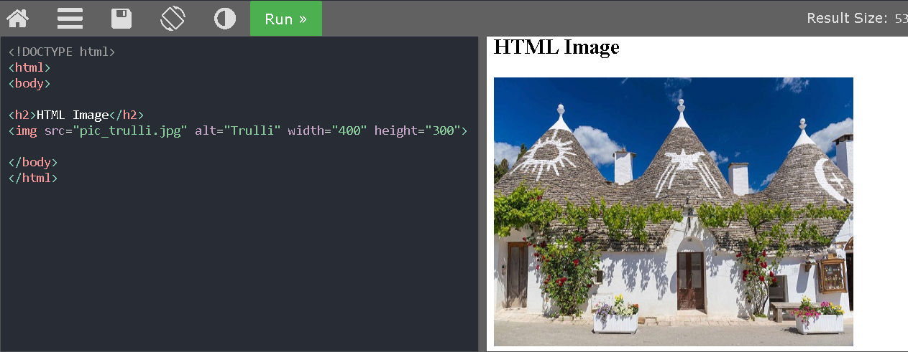

- Cada página comienza con: < HTML>
- A continuación viene la cabecera, delimitada por < HEAD> y < /HEAD> .- Después, el comando < BODY>, que indica el comienzo del cuerpo de la página. Las instrucciones HTML se
escribirán a continuación, y finalizarán con < /BODY>.- La página acabará con < /HTML>
Insertar imágenes en HTML
Para agregar y colocar imágenes en un documento HTML se utiliza la etiqueta (img). Al igual que ocurre con la
etiqueta (a), la etiqueta de la imagen por sí sola no hace nada. Depende del valor de los atributos que
especifiquemos, que indican qué imagen se debe mostrar y cómo ha de hacerse. Aquí vamos a insertar una
imagen en nuestro documento HTML.
1. Escribe (img /), la etiqueta de imagen es una categoría especial dentro de las etiquetas html, que
admite el autocierre. Así se cumplen los requisitos de sintaxis de XHTML y el archivo de imagen que vamos a
utilizar se indicará en el espacio que queda entre img y /. 2. Inserta un espacio en blanco y escribe src="". 3. En el interior de las comillas de src= escribe img/futbolamericano.jpg
El codigo quedaría asi: (img src="img/futbolamericano.jpg" /)
4. Sitúa el cursor a la derecha de la comilla de cierre que sigue al nombre de archivo futbolamericano.jpg
e inserta un espacio en blanco, y después escribe alt="". 5. Dentro de las comillas del paso anterior, escribe Jugadores. 6. En el menú Archivo, selecciona Guardar y después abre el archivo en el navegador. 7. Regresa al editor de textos y pon el cursor a la derecha de las últimas comillas que siguen al atributo
alt, inserta un espacio y escribe lo siguiente: width="200" height="250". (este procedimiento también se
puede utilizar en un archivo CSS, ya que pertenecen a la etiqueta "style"). 8. En el menú Archivo, selecciona GUARDAR y visualiza la página en el navegador para ver la imagen.

El papel de CSS
Se utilizan para dar formato al diseño de una página web. Con CSS, puede controlar el color, la fuente, el
tamaño del texto, el espaciado entre los elementos, cómo se colocan y se establecen los elementos, qué
imágenes de fondo o colores de fondo se van a utilizar, diferentes pantallas para diferentes dispositivos y
tamaños de pantalla.
La palabra en cascada significa que un estilo aplicado a un elemento primario también se aplicará a todos los
elementos
secundarios dentro del elemento primario. La forma más común de agregar CSS es mantener los estilos en
archivos CSS externos.
Cómo hacemos referencia a la sintaxis de CSS
Y esto se define de la siguiente manera:
Regla: Cada uno de los estilos que se compone de la hoja de estilos, la cual se compone de
una parte de "selectores", un símbolo de "llave de apertura" ({), la otra parte denominada "declaración"
y por último, el simbolo de "llave de cierre" (})
Selector: Indica el elemento o elementos HTML a los que se aplica la regla CSS, por ejemplo
los párrafos, divisiones, imagenes y tablas.
Declaración: Especifica los estilos que se aplican a los elementos y está compuesta por una
o más propiedades, como el color que tendrá un párrafo, el tamaño de letra y la superficie de los
bordes.
Propiedad: Característica que modifica en el elemento seleccionado, como el color de letra,
color de fondo y tamaño de tabla.
Valor: Se establece el nuevo valor de la característica modificada en el texto.
Definir un estilo para los títulos
Un título se puede definir por medio de la etiqueta header. Puede que una de las mejores maneras de
entender la acción de CSS sea ver cómo se aplica el estilo por defecto para este título al escribirlo en
pantalla. El título dentro de la etiqueta H1 a H6 tiene un nuevo color, por aplicación de una regla CSS.
Notación hexadecimal de color
El color, tanto en HTML como CSS, se designa mediante un código de seis caracteres precedido por el signo de
almohadilla. A esta notación se le llama código hexadecimal, y es el sistema que se utiliza para identificar
y establecer el color de los elementos. El código se divide en tres pares de dígitos, y cada uno de ellos
representa el valor RGB del espectro. Por ejemplo, el color blanco se representa en notación RBG como R:255
G:255 B:255, y su equivalente en HTML en formato hexadecimal es #FFFFFF (siendo FF el equivalente
hexadecimal del número 255 decimal, que se repite para los tres pares). Esto se basa en la idea de que todos
los colores se pueden conseguir mezclando rojo, verde y azul (en inglés, "Red, Green, Blue"), así que se
llama "sistema de color RGB". También se le llama sistema "aditivo" de color, porque se empieza con el negro
y se van añadiendo los tres colores.
Los estilos de clase y el elemento span
Los selectores de etiqueta se utilizan con mucha frecuencia, pero solo se pueden aplicar a elementos HTML. En
este caso podemos utilizar el selector de clase, que es una regla CSS que se puede aplicar a cualquier
elemento dentro de una página. Los selectores de clase tienen unas opciones de nomenclatura flexibles, pero
es muy conveniente utilizar nombres que describan adecuadamente lo que hacen.
Tres maneras de utilizar estilos
Internos: Se ingresan desde el mismo documento HTML con la etiqueta style
Externos: Se importan desde un archivo externo de tipo CSS y necesita la conexión en el
html utilizando el "link href".
Directos: son los que codifican en la misma línea que la etiqueta a utilizar.
Cuando utilizar hojas de estilo internas
Una hoja de estilo interna debe ser usado cuando un único documento tiene solo un estilo, y se define los
estilos internos en la sección (head) de un documento HTML, en la etiqueta (style)
Cuando utilizar hojas de estilo externas
Una hoja externa es en un sitio web con muchas páginas que tendrán el mismo estilo. Ya que en caso de
usar internas se tendría que incluir el estilo en cada una de las hojas multiplicando el trabajo.
Creación de una hoja de estilos externa
1. Ir a menu archivo y seleccionar plantilla CSS
2. En archivo seleccionar "Guardar como" o teclear CTRL +S y de preferencia poner "style.css".
3. En el documento HTML busca las reglas que has escrito dentro de las etiquetas style y selecciónalas
4. Guarda el archivo en el disco.
5. En el editor, vuelve al archivo y guárdalo en disco.
6. Utilizar en head, la etiqueta link y en href el nombre del archivo CSS.
7. Selecciona Archivo, luego Guardar y visualiza la página HTML en el navegador.
En qué consisten los estilos en cascada
Hemos visto que hay tres sitios donde podemos indicar reglas CSS: dentro de la propia etiqueta (inline),
internamente y en archivos externos asociados. Si surgiera algún conflicto en la definición de estilos
entre las declaraciones inline, interna y/o externa, el estilo directo (inline) será el que prevalezca
porque es el que más cerca se sitúa del código HTML. La hoja de estilo interna tiene precedencia sobre
cualquier otra externa, y las definiciones utilizadas en hojas de estilo externas se utilizan solo si no
entran en conflicto con las declaraciones internas o directas.
Uso de textos y tipos de letra en la web
A la hora de diseñar para la web, podemos formatear el texto de una forma parecida a como se hace en las
aplicaciones de procesamiento de textos y diseño publicitario de los equipos de escritorio, pero debemos
tener en cuenta algunas diferencias importantes. Cuando especificamos el uso de una fuente concreta,
esta fuente ha de estar instalada en el ordenador o el dispositivo del usuario donde se
va a restituir la página. Si el ordenador o dispositivo no dispone de esa fuente, el navegador la
sustituye por otra.
Tipos de letra de uso común en la web
Estas son las Fuentes que podemos utilizar con más confianza en la Web:
Arial
Verdana
Georgia
Times New Roman
Courier
Trebuchet
Lucida
Tahoma
Impact
Elección de font-family
1. En el editor de textos, realizar un nuevo archivo HTML.
Vamos a modificar el estilo del texto en esta página, pero dado que nuestros estilos están ahora
declarados en una hoja de estilos externa, tendremos que realizar estas modificaciones en dicha hoja.
2. Volvamos a nuestro documento styles.css que hemos creado en el ejercicio anterior. Ahora mismo tenemos
estilos para la etiqueta h1 y para una clase llamada ".red". Vamos a crear un estilo para el cuerpo de
la página.
3. En la parte superior del documento, por encima de la regla del estilo h1, escribe:
4. Guarda el archivo (Menú Archivo – Guardar) y visualiza la página en el navegador.
Como decíamos antes, el navegador muestra el tipo de letra Trebuchet si la tenemos instalada en el
equipo; en caso contrario, lo intenta primero con Tahoma, luego con Arial y finalmente, con cualquier
tipo de letra sans-serif.
5. Vuelve a la hoja de estilos en el editor y debajo justo de la regla para el "body", añade una nueva
regla de estilo para la etiqueta < p> con este contenido:
6. Guarda de nuevo el documento y visualiza el archivo html en el navegador. Ahora tenemos
una regla explícita para los párrafos, por la cual el tipo de letra aplicable es la Georgia. Los rótulos
de título siguen saliendo con letra Trebuchet, que es la que hemos definido para todo el cuerpo. Ten en
cuenta que aunque podríamos haber elegido cualquier tipo de letra presente en el ordenador, Trebuchet y
Georgia son buenas opciones de partida porque se encuentran en la mayoría de los ordenadores del mundo.
Elección de font-family
Cuando utilizamos CSS para formatear textos para la web, disponemos de algunas opciones para
establecer su tamaño y su grosor. La propiedad CSS que controla el tamaño del texto se llama
font-size.
Podemos modificar el valor de la propiedad font-size de varias formas:
1. Tamaño absoluto: se trata de una serie de palabras clave que indican tamaños predefinidos de
letra. Los tamaños nominados escalan de acuerdo con las preferencias del usuario con respecto a la
letra. Los valores posibles xx-small, x-small, small, medium, large, x-large y xx-large
2. Longitud: Es un número seguido de un indicador del sistema de medida (cm, mm, in, pt, o pc) o bien
un de unidades relativas (em, ex, o px).
3. Porcentaje: Un entero seguido del signo de porcentaje (%). El valor es un tanto por ciento del
tamaño de letra del objeto padre.
4. Tamaño relativo: una serie de palabras clave que se interpretan como relativas al tamaño de letra
del objeto padre. Los valores posibles son larger y smaller.
La elección de la unidad de medida para el tamaño de la letra en una página web es importante y no es
tan fácil como parece. La principal dificultad en este sentido tiene que ver con la resolución de la
pantalla y las distintas maneras en que, a lo largo del tiempo, los navegadores han resuelto la
presentación de los textos.
El texto en monitores pequeños a menudo tiene un aspecto distinto de como aparecen en monitores de
gran formato; con un poco de previsión podemos resolver este problema, imaginando el efecto en cada
caso. Además del problema de la resolución de pantalla, tenemos que considerar también la forma en
que cada navegador resuelve la restitución de los textos. Por ejemplo, nos navegadores permiten al
usuario cambiar a mano el tamaño de la letra. Más aún: cada vez hay más gente que navega por la Web
desde teléfonos y dispositivos móviles, lo que hace que la elección del tamaño de letra sea un
asunto aún más crítico.
Las medidas en pixels y puntos no son la mejor opción para el tamaño
La declaración del tamaño de letra en puntos puede ser algo obvio si vienes del mundo de las artes
gráficas, y si tienes experiencia con el diseño gráfico por ordenador, seguramente te manejarás muy
bien usando los pixels como unidad de medida. La propiedad font-size en CSS nos permite utilizar
ambas unidades. En el siguiente ejemplo, el selector CSS muestra una regla de párrafo con puntos y
la segunda, una regla de párrafo basada en pixels:
(regla CSS de tamaño de letra basada en puntos)
(regla CSS de tamaño de letra basada en pixels)
Aunque la unidad "points" está soportada, su uso es una mala práctica y no se recomienda en el diseño
de páginas Web. Los puntos son un sistema de medida pensado para la imprenta de papel que indican
una unidad absoluta de medida que no tiene una equivalencia exacta en pantalla. Los pixels, por su
parte, son la unidad de medida que se suele emplear en los gráficos por ordenador. Los tamaños y
resoluciones de pantalla se expresan en pixels. En un mundo ideal, los diseñadores deberían poder
utilizar sin riesgo los tamaños de letra expresados en pixels porque son unidades relativas pensadas
para escalar de forma nativa. A lo largo de los años, los navegadores han resuelto el proceso de
cambio de tamaño de los textos de diversas maneras. Por ejemplo, Internet Explorer 6 y 7 no
modifican el tamaño del texto basado en pixels si el usuario opta por alterar la configuración por
defecto.
Prácticamente todos los navegadores web ofrecen la posibilidad de alterar el tamaño del texto. Esta
opción suele aparecer en el menú de Opciones o de Configuración. En algunos navegadores modernos la
opción de cambio de tamaño del texto aparece en un submenú llamado Zoom. Muchos navegadores además
ofrecen la combinación de Ctrl + + (para ampliar) y Ctrl + – (para reducir) que aumentan o reducen
respectivamente el tamaño del texto. En el Mac OS, estas combinaciones son Command + + [aumento] y
Command + - [reducción].
Uso de una combinación de porcentaje y medida "em"
Cuando se trata de unidades de medida en CSS, se pueden distinguir dos grandes grupos, las unidades absolutas y relativas. En lo que se refiere al tamaño de fuente tipográfica, la unidad absoluta estrella es sin duda el píxel (px), y entre las unidades relativas destacan las unidades em y rem, junto al viejo porcentaje (%)
La unidad em es una unidad que nació en el mundo de la impresión y que es igual al tamaño de punto (point-size). Así, si un elemento tiene un point-size de 10, entonces 1em = 10point-size
A la hora de utilizar em es importante recordar que si se anidan elementos, el font-size de elementos superiores afectará al valor de em en elementos inferiores, y no solo el font-size del elemento raíz.
Preguntas
1. ¿Que es un XML y para que sirve?
XML son las siglas para eXtensible Markup Language, y esta es una herramienta independiente usada
para el almacenamiento y transporte de datos.
2. ¿Que caracteristicas tiene un documento XHTML?
Podemos decir que XHTML es la versión XML de HTML, este la rigidez de un archivo XML y puede ser
procesado por cualquier programa informático.
3. ¿Que es y para que sirve un archivo XHTML?
Simplifica el intercambio y transferencia de datos, al igual que los cambios de plataforma.
CONCLUSIONES
En la práctica vi todas las diferencias que ha tenido el html y xhtml, ya que el primer lenguaje de
xhtml
era muy extensible y estricta, para que la página fuera bien mostrado debería de cumplir las reglas
sintácticas, tenia que cumplir muchas reglas como ortografía, letras, símbolos e imponer las
restricciones en su forma de escribir el código correcto. Mientras que en HTML pueda tener errores
sintácticos, pero se podría mostrar correctamente o no. Se vieron los pasos para poder crear un
documento html, iniciando desde su estructura básica, luego inclur en el cuerpo todo lo que podíamos
mostrar en la pantalla para poder insertar imágenes, textos hasta etiquetas con vínculos. Y para que
tenga un mejor diseño con figuras, colores, tamaños y medidas podemos utilizar los documentos CSS
que
puede mejorar la presentación del contenido de una página web. Yo las primeras veces que utilize
estas
estructuras para hacer una página solía confundirme en los tamaños de letra, las medidas de imágenes
y
las etiquetas para abrir algun otro sitio pero gracias a algunos tutoriales pude aprender como se
podía
mejorar desde lo básico para que saliera correctamente.
1753717 De La Rosa Rangel Isai Alejandro
En la actual práctica no se me dificultó mucho en cuanto a ciertas diferencias del xhtml con el
html, ya
que html no es muy estricto en cuanto ortografia o la sintaxis para que la pagina sea bien mostrada,
en
xhtml es todo lo contrario, debe llevar reglas de sintaxis, etc. Y en cuanto a documentos los pasos
a
ver fue desde la estructura, cuerpo,etc. En lo personal en cada práctica que realizamos aprendo algo
nuevo y me despierta mas interes por seguir aprendiendo por mi cuenta
1743776 Garza Gámez Dax Walter
En esta práctica se pudo definir muchos terminos que conocimos desde mucho antes como html o
xhtml
que conocia la existencia de la palabra pero sin saber su significado por las siglas en inglés,
también otros conceptos más enfocados dentro del html para separar las partes de una página web
como
el title que va dentro del head o el body que va debajo del head, son conceptos básicos pero
importantes para poder hacer de una manera ordenada y fácil una página web,también sobre el CSS
y
como se usa en el html para darle un éstilo a cada página web
1677657 González Piña Kevin Eduardo
Al terminar esta practica pudimos entender la importancia del html y el xhtml, el xhtml es un
lenguaje un poco mas complicado que el html. En general, la sintaxis XHTML es más "estricta", en
el sentido de imponer restricciones en la forma de escribir etiquetas, atributos o valores,
mientras que la sintaxis HTML es más "flexible". Por ello es que fue un poco mas dificil
realizar esta practica aunque como todas las actividades pasadas fue divertido hacer la
practica.
1844993 Perea Benitez Edel Arit
Al concluir la practica se obtuvo un mejor entendimiento de todos los complementos que se le
puede adjuntar a HTML, como lo es XML, con el cual se puede complementar y así lograr el
transporte y la transferencia de datos, para así tener una pagina web completa.

.png)

.png)
.png)